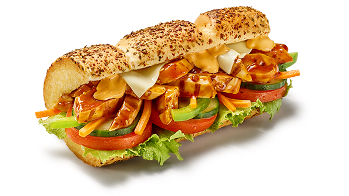

Chicken Teryaki

Savor the irresistible flavor of our Chicken Teriyaki sandwich,
featuring tender, marinated chicken strips glazed in a sweet
and savory teriyaki sauce. This sandwich comes on your choice
of freshly baked bread, layered with crisp lettuce, juicy
tomatoes, and a dash of onions for a refreshing crunch.
Customizable Toppings: Add your favorite veggies like cucumbers,
green peppers, or spinach. Top it off with sauces such as sweet
onion, mayo, or chipotle southwest for a personalized twist.
Ingredients:
- Freshly baked bread (choice of type)
- Grilled chicken strips
- Teriyaki sauce
- Lettuce
- Tomatoes
- Optional: cucumbers, green peppers, spinach, sauces
Steps:
- Start by selecting your preferred type of bread and slice it open.
- Warm the grilled chicken strips and toss them in teriyaki sauce.
- Layer the chicken on the bread as the base.
- Add fresh lettuce, tomatoes, and onions on top.
- Customize with additional veggies and sauces as desired.
- Toast the sandwich lightly if preferred.
- Serve and enjoy your Chicken Teriyaki sandwich!